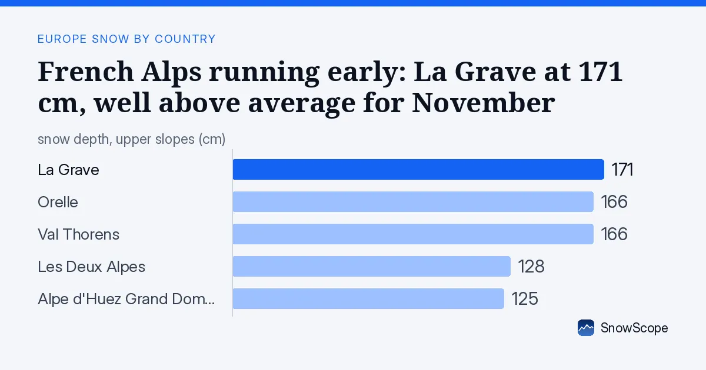
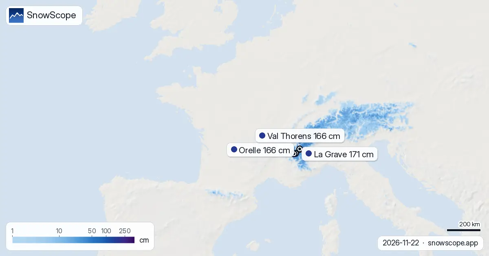

French Alps running early: La Grave at 171 cm, well above average for November
The French Alps are running 50 to 285 percent above normal snow depth for late November, with La Grave leading at 171 cm. The region saw heavy snow across three days this week, pushing total coverage to 18 percent white.
See the live snow forecast for La Grave in the SnowScope appSnow depth, powder alerts and the 3D map, free.
Well ahead of the season
La Grave holds 171 cm, against a typical 82 cm for this date in past winters. That is 146 percent of normal. Val Thorens is even more ahead: 166 cm measured, usually 46 cm by late November. Orelle and Alpe d'Huez Grand Domaine are both running at 150 and 260 percent of their seasonal average. Only heavy early snow can produce these figures.
Five major resorts now sit well above their historical median depth, a rare setup this early in the season. We measure these values at the base of each resort area; actual depth in higher terrain will be greater.
| Resort | Today | Normal for the date | Share of normal |
|---|---|---|---|
| La Grave | 120 cm | 82 cm | 146 % |
| Orelle | 99 cm | 66 cm | 150 % |
| Val Thorens | 131 cm | 46 cm | 285 % |
| Les Deux Alpes | 59 cm | 30 cm | 197 % |
| Alpe d'Huez Grand Domaine | 65 cm | 25 cm | 260 % |

How the snow arrived
Three days of continuous precipitation delivered the goods. The Mont Blanc massif saw the heaviest fall: 249 cm in 72 hours. The northern French Alps received 150 cm, and the southern reaches 132 cm. Single-day peak was 56 cm on 22 November.
Coverage across the mapped area now stands at 16,440 square kilometres, up from 11,880 square kilometres yesterday. That is 38 percent more area white in just 24 hours. The snow line sits at 1,600 metres, leaving lower slopes bare but higher terrain well equipped.

Where to find the best conditions
La Grave leads with 171 cm and 127 cm gained in three days. Orelle and Val Thorens both hold 166 cm, with 121 cm in the same window. These high-altitude areas around 3,200 to 3,500 metres have been sheltered from wind and trap the most moisture. Les Deux Alpes and Alpe d'Huez Grand Domaine have 128 and 125 cm respectively, still strong but tracking lower than the high-altitude neighbours.
Above 2,500 metres, mean depth is now 56 cm and snow cover reaches 98 percent. The 2,000 to 2,500 metre band holds 25 cm average with 92 percent cover. Below 2,000 metres, conditions thin rapidly: the 1,500 to 2,000 metre band averages 11 cm at 62 percent coverage.
What is coming next
More snow arrives as we head into the weekend. By 25 November, SnowScope shows 29 cm possible, the heaviest day in the next week. Total fresh snow over the next three days should reach 35 cm in the best areas, with another 38 cm possible through day seven. The pattern points to sustained moisture flow into the Alps from the west.
Switzerland to the east already has 71 percent white coverage and will also fill in. Italy is behind at 33 percent white, though the leader La Thuile ski holds 84 cm. France will likely extend its advantage if the forecast holds.
Snow by height
The elevation bands tell the full story. High peaks above 2,500 metres are buried: 56 cm average with 98 percent white. Drop to 2,000 to 2,500 metres and you have 25 cm at 92 percent cover, still solid. The 1,500 to 2,000 metre band is patchy at 11 cm average and 62 percent coverage. Below 1,500 metres, snow is sparse or absent.
Early-season snow this high means rocks and terrain features are likely under thin patches at mid-elevations. Skiers in the 1,500 to 2,000 metre zone should stay aware of what may be buried.
The week in context
One week ago, France had only 10,750 square kilometres of snow cover. By yesterday it was 11,880 square kilometres. Today we see 16,440 square kilometres. The jump since 16 November shows how rare this event is: a major early dump that filled in the gap between seasonal start and typical mid-November snow. Les Arcs held the lead for two days, then Orelle, now La Grave. These shifts reflect where the wettest air mass hit each sector.
The 190 resorts with measurable snow out of 223 total is a strong count for late November. Second-week forecasts (days 8 to 14 beyond today) show less snow: a maximum of 17 cm through the first week of December, suggesting this event will not repeat immediately.
Tips for skiers
- Head to La Grave, Orelle or Val Thorens above 2,500 metres if you can reach those peaks; 171 to 166 cm bases and 98 percent snow coverage above that height make for the safest skiing.
- Stay alert in the 1,500 to 2,000 metre band: 11 cm average with 62 percent cover means exposed rocks and thin patches. Consult the official avalanche bulletin before going off-piste in any sector.
- Lower altitudes below 1,500 metres are still mostly bare; aim for high terrain and north-facing slopes to find continuous cover.
- More snow is forecast through 25 November and beyond; conditions will improve further by the weekend, especially for mid-altitude areas.
About these numbers
Resort snow depths are the deepest snow on the resort's upper slopes on the date shown; they are estimates for an area, not a measurement at one point. Forecasts can change. Always read the official avalanche bulletin before going off-piste.
Cite this report
For research, teaching or the press: the numbers and charts are free to reuse under CC BY 4.0 with this citation.
SnowScope (2026), French Alps running early: La Grave at 171 cm, well above average for November, https://snowscope.app/blog/en/2026/11/france-snow-ahead-of-normal-22-november-2026.html, accessed 2026-11-22
SnowScope (Atlas Labs). (2026, November 22). French Alps running early: La Grave at 171 cm, well above average for November. SnowScope snow reports. https://snowscope.app/blog/en/2026/11/france-snow-ahead-of-normal-22-november-2026.html
BibTeX
@misc{snowscope2026francesnowaheadofnormal2,
author = {{SnowScope (Atlas Labs)}},
title = {French Alps running early: La Grave at 171 cm, well above average for November},
year = {2026},
month = nov,
howpublished = {\url{https://snowscope.app/blog/en/2026/11/france-snow-ahead-of-normal-22-november-2026.html}},
note = {Published 2026-11-22 11:21 UTC; accessed 2026-11-22}
}· CC BY 4.0 · Methods, data and tools →
La Grave: snow and temperature by height, this winter vs last (tools) →
Follow La Grave
Free: a message when fresh snow is coming, and the forecast every morning.
More snow reports

Alps snow report, 21 November: Alpe d'Huez has 92 cm on upper slopes. Orelle leads the region with 136 cm. Fresh snow incoming by Tuesday.

La Grave leads the Alps with 97 cm on upper slopes. Snow coverage is shrinking as early winter builds unevenly across the region on 15 November.

Les Deux Alpes: 38–42 cm of fresh snow in 72 hours (Alps, 14 November). La Grave got 53 cm of new snow in the last 72 hours, 7 cm of it in the last …